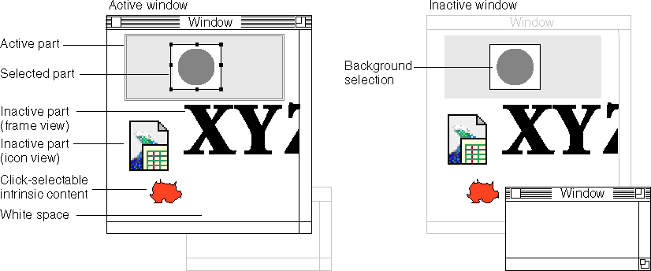

Mouse Events, Activation, and Dragging
This section discusses how your part should respond to mouse-down, mouse-
up, and activate events in order to activate your part or your window, initiate a dragging operation, or create a selection. YourHandleEventmethod (see the previous section, "The HandleEvent Method of Your Part Editor") should dispatch events to routines that perform the actions described here.Follow these procedures to ensure that your parts behave in accordance with the user-interface guidelines given in the sections "Activation" and "Using Drag and Drop". Some of these instructions are specific to the Mac OS; on platforms without activation events and the concept of active windows, the procedures to follow may be somewhat different.
For other information about creating and modifying selections, see "Mouse-Down Tracking and Selection".
How Part Activation Happens
A part's frame activates itself in these situations:The part activates itself by acquiring the selection focus (see "Focus Types") for one of its display frames. The part is then responsible for displaying its contents appropriately (for example, by restoring the highlighting of a selection) and for providing any menus, controls, palettes, floating windows, or other auxiliary items that are part of its active state. The part must also obtain ownership of any other foci that it needs. OpenDoc draws the active frame border around the frame with the selection focus.
- when it receives a mouse event within its content area
- when its window first opens and the part has stored information specifying that the frame should be active on opening
- when its window becomes active and the part has stored information specifying that the frame should be active upon window activation
- when data is dropped on the part as a result of a drag-and-drop operation
- when it has another reason for becoming active (such as the need to display a selection, such as a link source, to the user)
Typically, one part is deactivated when another is activated. A part is expected to deactivate itself when it receives a request to relinquish the selection focus, plus possibly other foci. The deactivating part is responsible for clearing its selections--an inactive part in the active window should not maintain a background selection--and for removing any menus and other items that were part of its active state. OpenDoc removes the active frame border from around the (now inactive) part and draws it around the part that currently has the selection focus.
Mouse events that cause part activation can also cause window activation and can lead to dragging of part content. Figure 5-1 illustrates some of the elements you must consider in handling mouse-down events for these purposes. As the following sections explain, your part should handle mouse events according to whether your part is active or inactive, whether it is in an active or inactive window, and whether the event location corresponds to one of the elements--such as the active frame border or an embedded part's icon--that are shown in Figure 5-1.
Figure 5-1 Elements related to mouse events in active and inactive windows

Note these points from Figure 5-1:The event-handling guidelines given here are designed to provide the user with maximum consistency and flexibility when activating parts and when dragging selections. These guidelines are summarized more briefly in the sections "Activating Parts" and "Activating Windows".
- Embedded parts can be represented by either frames or icons. Frames can be active or inactive, and inactive frames can be either selected or unselected. (Figure 5-1 does not show that inactive frames can also be bundled.)
- There can be only one active frame in the active window, and no active frame in an inactive window (except that a dialog box can appear in front of a window that contains the active part).
- All selected items must be within the active frame.
- A selection in the active window becomes a background selection if the window becomes inactive.
- A selection (either foreground or background) can consist of either intrinsic content or an embedded frame or icon, or a combination of both.
- "Click-selectable intrinsic content" in Figure 5-1 means any item of intrinsic content that can be selected by a single mouse click, such as a graphics object in a draw part.
- "White space" in Figure 5-1 means any location in the content area of a part that is neither click-selectable intrinsic content nor an embedded part frame or icon. It includes empty space, but also includes content (such as text or painting) that requires a sweeping gesture, rather than a single click, for selection.
- An inactive window may be in the current process (if, for example, it is a part window of the active document) or in a background process (if, for example, it is a window of another document).
Handling Mouse-Down Events
Table 5-2 describes how your part editor'sHandleEventmethod should respond to each of the mouse-down events sent to it by OpenDoc. Mouse-up event handling is described in the section "Handling Mouse-Up Events".The information in Table 5-2 is grouped first by event type. The situations under which your part receives each type of event are listed in the sections "Mouse Events" and "Mouse Events in Embedded Frames", and can also be inferred from the descriptions in Table 5-2.
Several situations described in Table 5-2 require your part to initiate a drag operation. See the section "Initiating a Drag" for instructions.
Handling Mouse-Up Events
Table 5-3 describes how your part editor'sHandleEventmethod should respond to each of the mouse-up events sent to it by OpenDoc. Mouse-down event handling is described in the section "Handling Mouse-Down Events".The information in Table 5-3 is grouped by event type; the situations under which your part receives these types of event are listed in the sections "Mouse Events" and "Mouse Events in Embedded Frames", and can also be inferred from the descriptions in Table 5-3.
Table 5-3 Handling mouse-up events Frame and window state Event location:
Action to takeEvent type = kODEvtMouseUpActive part,
active windowIn white space or intrinsic content:
If necessary, complete any activation you may have started on receiving a prior mouse-down event: obtain any needed foci that you do not already have; display your palettes and menus if they are not already displayed. Prepare for editing at the insertion point or selection.Inactive part,
active windowAt any location:
Activate your part; obtain the selection focus and any other foci you need, and display your palettes and menus. Prepare for editing at the insertion point or selection. (This event is not sent to you if it occurs within a nonbundled embedded frame.)Inactive part,
inactive window
(curr. process)In white space or intrinsic content:
Activate your part's window by calling theSelectmethod of the window. Do not activate your part yet; see "Handling Activate Events" for an explanation.Inactive part,
inactive window
(bkgd. process)(OpenDoc does not send this event to windows in background processes.) Event type = kODEvtMouseUpEmbeddedActive part,
active windowIn bundled frame or frame with icon view type embedded in your part:
If necessary, complete any activation you may have started on receiving a prior mouse-down event: obtain any needed foci that you do not already have; display your palettes and menus if they are not already displayed. Prepare for editing at the insertion point or selection.In selected frame embedded in your part:
(You do not receive this event. If a drag occurs after mouse-down, OpenDoc absorbs the subsequent mouse-up. If no drag occurs, OpenDoc sends the mouse-up to the embedded selected frame so that it can activate itself.)Inactive part, active window In bundled frame or frame with icon view type embedded in your part:
Activate your part or complete any activation you may have started on receiving a prior mouse-down event: obtain any needed foci that you do not already have; display your palettes and menus if they are not already displayed. Prepare for editing at the insertion point or selection.Inactive part,
inactive window
(curr. process)In bundled frame, background-selected frame, or frame with icon view type embedded in your part:
Activate your part's window by calling theSelectmethod of the window. Do not activate your part yet; see "Handling Activate Events" (next section) for an explanation.Inactive part,
inactive window
(bkgd process)(OpenDoc does not send this event to windows in background processes. If the prior mouse-down event has caused a process switch, this mouse-up event is then sent to the current process, as it should be. If a drag has occurred, this mouse-up event does not happen.) Handling Activate Events
As noted in the section "Activate Events", your part receives an activate event for each of its facets when your window becomes active, and a deactivate event when your window becomes inactive.When a window becomes inactive, the part that holds the selection focus is likely to relinquish that focus (on request by another part) but can still maintain, as a background selection, any selection it had been displaying. Conversely, when a window becomes active, the part that had held the selection focus when the window became inactive normally regains the selection focus. That part may or may not be the part that actually activated the window.
This part-activation convention requires that your part respond to activate and deactivate events by recording or retrieving stored information on its focus transfers; see the section "On Window Activation" for more information.
Activate events in a window go first to the most deeply embedded facets and last to the root facet. This dispatch order gives the root part the opportunity to obtain the selection focus if no embedded part has done so. It also allows the root part to override any activation actions taken by embedded parts.